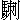

那太白金星與美猴王同出了洞天深處，一齊駕雲而起。原來悟空觔斗雲比眾不同，十分快疾，把個金星撇在腦後，先至南天門外。正欲收雲前進，被增長天王領著龐、劉、苟、畢、鄧、辛、張、陶，一路大力天丁，槍刀劍戟，擋住天門，不肯放進。猴王道：「這個金星老兒，乃奸詐之徒！既請老孫，如何叫人動刀動槍，阻塞門路？」正嚷間，金星倏到。悟空就覿面發狠道：「你這老兒，怎麼哄我？被你說奉玉帝招安旨意來請，卻怎麼叫這些人阻住天門，不放老孫進去？」金星笑道：「大王息怒。你自來未曾到此天堂，卻又無名，眾天丁又與你素不相識，他怎肯放你擅入？等如今見了天尊，授了仙籙，注了官名，向後隨你出入，誰復擋也？」悟空道：「這等說，也罷，我不進去了。」金星又用手扯住道：「你還同我進去。」將近天門，金星高叫道：「那天門天將，大小吏兵，放開路者。此乃下界仙人，我奉玉帝聖旨，宣他來也。」這增長天王與眾天丁俱才斂兵退避。
猴王始信其言。同金星緩步入裏觀看。真個是：初登上界，乍入天堂。金光萬道滾紅霓，瑞氣千條噴紫霧。只見那南天門，碧沉沉，琉璃造就；明幌幌，寶玉妝成。兩邊擺數十員鎮天元帥，一員員頂樑靠柱，持銑擁旄；四下列十數個金甲神人，一個個執戟懸鞭，持刀仗劍。外廂猶可，入內驚人：裏壁廂有幾根大柱，柱上纏繞著金鱗耀日赤鬚龍；又有幾座長橋，橋上盤旋著彩羽凌空丹頂鳳。明霞幌幌映天光，碧霧濛濛遮斗口。
這天上有三十三座天宮，乃遣雲宮、毗沙宮、五明宮、太陽宮、花藥宮……，一宮宮脊吞金穩獸；又有七十二重寶殿，乃朝會殿、凌虛殿、寶光殿、天王殿、靈官殿……，一殿殿柱列玉麒麟。壽星台上，有千千年不卸的名花；煉藥爐邊，有萬萬載常青的繡草。又至那朝聖樓前，絳紗衣，星辰燦爛；芙蓉冠，金璧輝煌。玉簪珠履，紫綬金章。金鐘撞動，三曹神表進丹墀；天鼓鳴時，萬聖朝王參玉帝。又至那靈霄寶殿，金釘攢玉戶，彩鳳舞朱門。復道迴廊，處處玲瓏剔透；三簷四簇，層層龍鳳翱翔。上面有個紫巍巍，明幌幌，圓丟丟，亮灼灼，大金葫蘆頂；下面有天妃懸掌扇，玉女捧仙巾。惡狠狠掌朝的天將；氣昂昂護駕的仙卿。正中間，琉璃盤內，放許多重重疊疊太乙丹；瑪瑙瓶中，插幾枝彎彎曲曲珊瑚樹。正是：
天宮異物般般有，世上如他件件無。金闕銀鑾並紫府，琪花瑤草暨瓊葩。
朝王玉兔壇邊過，參聖金烏著底飛。猴王有分來天境，不墮人間點污泥。
太白金星領著美猴王到於靈霄殿外，不等宣詔，直至御前，朝上禮拜。悟空挺身在旁，且不朝禮，但側耳以聽金星啟奏。金星奏道：「臣領聖旨，已宣妖仙到了。」玉帝垂簾問曰：「哪個是妖仙？」悟空卻才躬身答道：「老孫便是！」仙卿們都大驚失色道：「這個野猴！怎麼不拜伏參見，輒敢這等答應道：『老孫便是！』卻該死了！該死了！」玉帝傳旨道：「那孫悟空乃下界妖仙，初得人身，不知朝禮，姑且恕罪。」眾仙卿叫聲「謝恩！」猴王卻才朝上唱個大喏。玉帝宣文選武選仙卿，看哪處少甚官職，著孫悟空去除授。旁邊轉過武曲星君，啟奏道：「天宮裏各宮各殿，各方各處，都不少官，只是御馬監缺個正堂管事。」玉帝傳旨道：「就除他做個『弼馬溫』罷。」眾臣叫謝恩，他也只朝上唱個大喏。玉帝又差木德星君送他去御馬監到任。
當時猴王歡歡喜喜，與木德星官逕去到任。事畢，木德星官回宮。他在監裏，會聚了監丞、監副、典簿、力士，大小官員人等，查明本監事務，只有天馬千匹。乃是：驊騮騏驥，騄駬纖離；龍媒紫燕，挾翼驌驦；駃騠銀騔，騕褭飛黃；騊駼翻羽，赤兔超光；逾輝彌景，騰霧勝黃﹔追風絕地，飛翻奔霄；逸飄赤電，銅爵浮雲﹔驄瓏虎

，絕塵紫鱗；四極大宛，八駿九逸，千里絕群：此等良馬，一個個，嘶風逐電精神壯，踏霧登雲氣力長。這猴王查看了文簿，點明了馬數。本監中典簿管徵備草料；力士官管刷洗馬匹、扎草、飲水、煮料；監丞、監副輔佐催辦；弼馬晝夜不睡，滋養馬匹。日間舞弄猶可，夜間看管慇勤，但是馬睡的趕起來吃草；走的捉將來靠槽。那些天馬見了他，泯耳攢蹄，倒養得肉膘肥滿。
不覺的半月有餘，一朝閑暇，眾監官都安排酒席，一則與他接風，二則與他賀喜。正在歡飲之間，猴王忽停杯問曰：「我這『弼馬溫』是個甚麼官銜？」眾曰：「官名就是此了。」又問：「此官是個幾品？」眾道：「沒有品從。」猴王道：「沒品，想是大之極也。」眾道：「不大，不大，只喚做『未入流』。」猴王道：「怎麼叫做未入流？」眾道：「末等。這樣官兒，最低最小，只可與他看馬。似堂尊到任之後，這等慇勤，餵得馬肥，只落得道聲『好』字，如稍有些尪羸，還要見責；再十分傷損，還要罰贖問罪。」猴王聞此，不覺心頭火起，咬牙大怒道：「這般藐視老孫！老孫在花果山稱王稱祖，怎麼哄我來替他養馬？養馬者，乃後生小輩，下賤之役，豈是待我的？不做他！不做他！我將去也！」呼喇的一聲，把公案推倒，耳中取出寶貝，幌一幌，碗來粗細，一路解數，直打出御馬監，徑至南天門。眾天丁知他受了仙籙，乃是個弼馬溫，不敢阻擋，讓他打出天門去了。
須臾，按落雲頭，回至花果山上。只見那四健將與各洞妖王，在那裏操演兵卒。這猴王厲聲高叫道：「小的們！老孫來了！」一群猴都來叩頭，迎接進洞天深處，請猴王高登寶位，一壁廂辦酒接風都道：「恭喜大王，上界去十數年，想必得意榮歸也？」猴王道：「我才半月有餘，哪裏有十數年？」眾猴道：「大王，你在天上不覺時辰。天上一日，就是下界一年哩。請問大王官居何職？」猴王搖手道：「不好說！不好說！活活的羞殺人！那玉帝不會用人，他見老孫這般模樣，封我做個甚麼『弼馬溫』，原來是與他養馬，未入流品之類。我初到任時不知，只在御馬監中頑耍。及今日問我同僚，始知是這等卑賤。老孫心中大惱，推倒席面，不受官銜，因此走下來了。」眾猴道：「來得好！來得好！大王在這福地洞天之處為王，多少尊重快樂，怎麼肯去與他做馬伕？」叫：「小的們！快辦酒來，與大王釋悶。」
正飲酒歡會間，有人來報道：「大王，門外有兩個獨角鬼王，要見大王。」猴王道：「叫他進來。」那鬼王整衣跑入洞中，倒身下拜。美猴王問他：「你見我何干？」鬼王道：「久聞大王招賢，無由得見；今見大王授了天籙，得意榮歸，特獻赭黃袍一件，與大王稱慶。肯不棄鄙賤，收納小人，亦得效犬馬之勞。」猴王大喜，將赭黃袍穿起，眾等欣然排班朝拜，即將鬼王封為前部總督先鋒。鬼王謝恩畢，復啟道：「大王在天許久，所授何職？」猴王道：「玉帝輕賢，封我做個甚麼弼馬溫！」鬼王聽言，又奏道：「大王有此神通，如何與他養馬？就做個『齊天大聖』，有何不可？」猴王聞說，歡喜不勝，連道幾個「好！好！好！」叫四健將：「就替我快置個旌旗，旗上寫『齊天大聖』四大字，立竿張掛。自此以後，只稱我為齊天大聖，不許再稱大王。亦可傳與各洞妖王，一體知悉。」此不在話下。
卻說那玉帝次日設朝，只見張天師引御馬監監丞、監副在丹墀下拜奏道：「萬歲，新任弼馬溫孫悟空，因嫌官小，昨日反下天宮去了。」正說間，又見南天門外增長天王領眾天丁，亦奏道：「弼馬溫不知何故，走出天門去了。」玉帝聞言，即傳旨：「著兩路神元，各歸本職，朕遣天兵，擒拿此怪。」班部中閃上托塔李天王與哪吒三太子，越班奏上道：「萬歲，微臣不才，請旨降此妖怪。」玉帝大喜，即封托塔天王李靖為降魔大元帥，哪吒三太子為三壇海會大神，即刻興師下界。
李天王與哪吒叩頭謝辭，徑至本宮，點起三軍，帥眾頭目，著巨靈神為先鋒，魚肚將掠後，藥叉將催兵。一霎時出南天門外，徑來到花果山。選平陽處安了營寨，傳令叫巨靈神挑戰。巨靈神得令，結束整齊，輪著宣花斧，到了水簾洞外。只見小洞門外，許多妖魔，都是些狼蟲虎豹之類，丫丫叉叉，輪槍舞劍，在那裏跳鬥咆哮。這巨靈神喝道：「那業畜！快早去報與弼馬溫知道，吾乃上天大將，奉玉帝旨意，到此收伏。叫他早早出來受降，免致汝等皆傷殘也。」那些怪奔奔波波，傳報洞中道：「禍事了！禍事了！」猴王問：「有甚禍事？」眾妖道：「門外有一員天將，口稱大聖官銜，道：奉玉帝聖旨，來此收伏。叫早早出去受降，免傷我等性命。」猴王聽說，叫：「取我披掛來！」就戴上紫金冠，貫上黃金甲，登上步雲鞋，手執如意金箍棒，領眾出門，擺開陣勢。這巨靈神睜睛觀看，真好猴王：
身穿金甲亮堂堂，頭戴金冠光映映。手舉金箍棒一根，足踏雲鞋皆相稱。
一雙怪眼似明星，兩耳過肩查又硬。挺挺身材變化多，聲音響亮如鐘磬。
尖嘴咨牙弼馬溫，心高要做齊天聖。
巨靈神厲聲高叫道：「那潑猴！你認得我麼？」大聖聽言，急問道：「你是哪路毛神，老孫不曾會你，你快報名來。」巨靈神道：「我把你那欺心的猢猻！你是認不得我！我乃高上神靈托塔李天王部下先鋒，巨靈天將！今奉玉帝聖旨，到此收降你。你快卸了裝束，歸順天恩，免得這滿山諸畜遭誅；若道半個不字，叫你頃刻化為齏粉！」猴王聽說，心中大怒道：「潑毛神，休誇大口，少弄長舌！我本待一棒打死你，恐無人去報信；且留你性命，快早回天，對玉皇說：他甚不用賢！老孫有無窮的本事，為何叫我替他養馬？你看我這旌旗上字號。若依此字號升官，我就不動刀兵，自然的天地清泰；如若不依時間，就打上靈霄寶殿，叫他龍床定坐不成！」這巨靈神聞此言，急睜睛迎風觀看，果見門外豎一高竿，竿上有旌旗一面，上寫著「齊天大聖」四大字。巨靈神冷笑三聲道：「這潑猴，這等不知人事，輒敢無狀，你就要做齊天大聖！好好的吃吾一斧！」劈頭就砍將去。那猴王正是會家不忙，將金箍棒應手相迎。這一場好殺：
棒名如意，斧號宣花。他兩個乍相逢，不知深淺；斧和棒，左右交加。一個暗藏神妙，一個大口稱誇。使動法，噴雲噯霧；展開手，播土揚沙。天將神通就有道，猴王變化實無涯。棒舉卻如龍戲水，斧來猶似鳳穿花。巨靈名望傳天下，原來本事不如他；大聖輕輕輪鐵棒，著頭一下滿身麻。
巨靈神抵敵他不住，被猴王劈頭一棒，慌忙將斧架隔，喀嚓的一聲，把個斧柄打做兩截，急撤身敗陣逃生。猴王笑道：「膿包！膿包！我已饒了你，你快去報信！快去報信！」巨靈神回至營門，逕見托塔天王，忙哈哈下跪道：「弼馬溫果是神通廣大！末將戰他不得，敗陣回來請罪。」李天王發怒道：「這廝銼吾銳氣，推出斬之！」旁邊閃出哪吒太子，拜告：「父王息怒，且恕巨靈之罪，待孩兒出師一遭，便知深淺。」天王聽諫，且叫回營待罪管事。這哪吒太子，甲冑齊整，跳出營盤，撞至水簾洞外。那悟空正來收兵，見哪吒來的勇猛。好太子：
總角才遮囟，披毛未蓋肩。神奇多敏悟，骨秀更清妍。
誠為天上麒麟子，果是煙霞彩鳳仙。龍種自然非俗相，妙齡端不類塵凡。
身帶六般神器械，飛騰變化廣無邊。今受玉皇金口詔，敕射海會號三壇。
悟空迎近前來問曰：「你是誰家小哥？闖近吾門，有何事幹？」哪吒喝道：「潑妖猴！豈不認得我？我乃托塔天王三太子哪吒是也。今奉玉帝欽差，至此捉你。」悟空笑道：「小太子，你的奶牙尚未退，胎毛尚未乾，怎敢說這般大話？我且留你的性命，不打你。你只看我旌旗上的是甚麼字號，拜上玉帝：是這般官銜，再也不須動眾，我自皈依；若是不遂我心，定要打上靈霄寶殿。」哪吒抬頭看處，乃齊天大聖四字。哪吒道：「這妖猴能有多大神通，就敢稱此名號！不要怕！吃吾一劍！」悟空道：「我只站下不動，任你砍幾劍罷。」那哪吒奮怒，大喝一聲，叫「變！」即變做三頭六臂，惡狠狠，手持著六般兵器，乃是斬妖劍、砍妖刀、縛妖索、降妖杵、繡球兒、火輪兒，丫丫叉叉，撲面打來。悟空見了，心驚道：「這小哥倒也會弄些手段！莫無禮，看我神通！」好大聖，喝聲「變」，也變做三頭六臂；把金箍棒幌一幌，也變做三條；六隻手拿著三條棒架住。這場鬥，真是個地動山搖，好殺也：
六臂哪吒太子，天生美石猴王，相逢真對手，正遇本源流。那一個蒙差來下界，這一個欺心鬧斗牛。斬妖寶劍鋒芒快，砍妖刀狠鬼神愁；縛妖索子如飛蟒，降妖大杵似狼頭；火輪掣電烘烘艷，往往來來滾繡球。大聖三條如意棒，前遮後擋運機謀。苦爭數合無高下，太子心中不肯休。把那六件兵器多叫變，百千萬億照頭丟。猴王不懼呵呵笑，鐵棒翻騰自運籌。以一化千千化萬，滿空亂舞賽飛虯。唬得各洞妖王都閉戶，遍山鬼怪盡藏頭。神兵怒氣雲慘慘，金箍鐵棒響颼颼。那壁廂，天丁吶喊人人怕；這壁廂，猴怪搖旗個個憂。發狠兩家齊鬥勇，不知哪個剛強哪個柔？
三太子與悟空各騁神威，鬥了個三十回合。那太子六般兵器，變做千千萬萬；孫悟空金箍棒，變做萬萬千千。半空中似雨點流星，不分勝負。原來悟空手疾眼快，正在那混亂之時，他拔下一根毫毛，叫聲「變！」就變做他的本相，手挺著棒，演著哪吒；他的真身，卻一縱，趕至哪吒腦後，著左膊上一棒打來。哪吒正使法間，聽得棒頭風響，急躲閃時，不能措手，被他著了一下，負痛逃走；收了法，把六件兵器依舊歸身，敗陣而回。
那陣上李天王早已看見，急欲提兵助戰。不覺太子倏至面前，戰兢兢報道：「父王！弼馬溫真個有本事！孩兒這般法力，也戰他不過，已被他打傷膊也。」天王大驚失色道：「這廝恁的神通，如何取勝？」太子道：「他洞門外豎一竿，旗上寫齊天大聖四字，親口誇稱，叫玉帝就封他做齊天大聖，萬事俱休；若還不是此號，定要打上靈霄寶殿哩！」天王道：「既然如此，且不要與他相持，且去上界，將此言回奏，再多遣天兵，圍捉這廝，未為遲也。」太子負痛，不能復戰，故同天王回天啟奏不題。
你看那猴王得勝歸山，那七十二洞妖王與那六弟兄，俱來賀喜。在洞天福地，飲樂無比。他卻對六弟兄說：「小弟既稱齊天大聖，你們亦可以大聖稱之。」內有牛魔王忽然高聲叫道：「賢弟言之有理，我即稱做個平天大聖。」蛟魔王道：「我稱覆海大聖。」鵬魔王道：「我稱混天大聖。」獅駝王道：「我稱移山大聖。」獼猴王道：「我稱通風大聖。」 狨王道：「我稱驅神大聖。」此時七大聖自作自為，自稱自號，耍樂一日，各散訖。
狨王道：「我稱驅神大聖。」此時七大聖自作自為，自稱自號，耍樂一日，各散訖。
卻說那李天王與三太子領著眾將，直至靈霄殿。啟奏道：「臣等奉聖旨出師下界，收伏妖仙孫悟空，不期他神通廣大，不能取勝，仍望萬歲添兵剿除。」玉帝道：「量一妖猴，有多少本事，還要添兵？」太子又近前奏道：「望萬歲赦臣死罪！那妖猴使一條鐵棒，先敗了巨靈神，又打傷臣臂膊。洞門外立一竿旗，上書齊天大聖四字，道是封他這官職，即便休兵來投；若不是此官，還要打上靈霄寶殿也。」玉帝聞言，驚訝道：「這妖猴何敢這般狂妄！著眾將即刻誅之。」正說間，班部中又閃出太白金星，奏道：「那妖猴只知出言，不知大小。欲加兵與他爭鬥，想一時不能收伏，反又勞師。不若萬歲大捨恩慈，還降招安旨意，就叫他做個齊天大聖。只是加他個空銜，有官無籙便了。」玉帝道：「怎麼喚作有官無籙？」金星道：「名是齊天大聖，只不與他事管，不與他俸祿，且養在天壤之間，收他的邪心，使不生狂妄，庶乾坤安靖，海宇得清寧也。」玉帝聞言道：「依卿所奏。」即命降了詔書，仍著金星領去。
金星復出南天門，直至花果山水簾洞外觀看。這番比前不同，威風凜凜，殺氣森森，各樣妖精，無般不有。一個個都執劍拈槍，拿刀弄杖的，在那裏咆哮跳躍。一見金星，皆上前動手。金星道：「那眾頭目來！累你去報你大聖知之。吾乃上帝遣來天使，有聖旨在此請他。」眾妖即跑入報道：「外面有一老者，他說是上界天使，有旨意請你。」悟空道：「來得好！來得好！想是前番來的那太白金星。那次請我上界，雖是官爵不堪，卻也天上走了一次，認得那天門內外之路。今番又來，定有好意。」叫眾頭目大開旗鼓，擺隊迎接。
大聖即帶引群猴，頂冠貫甲，甲上罩了赭黃袍，足踏雲履，急出洞門，躬身施禮，高叫道：「老星請進，恕我失迎之罪。」金星趨步向前，徑入洞內，面南立著道：「今告大聖，前者因大聖嫌惡官小，躲離御馬監，當有本監中大小官員奏了玉帝。玉帝傳旨道：『凡授官者，皆由卑而尊，為何嫌小？』即有李天王領哪吒下界取戰。不知大聖神通，故遭敗北，回天奏道：『大聖立一竿旗，要做齊天大聖。』眾武將還要支吾，是老漢力為大聖冒罪奏聞，免興師旅，請大王授籙。玉帝准奏，因此來請。」悟空笑道：「前番勤勞，今又蒙愛，多謝！多謝！但不知上天可有此『齊天大聖』之官銜也？」金星道：「老漢以此銜奏准，方敢領旨而來；如有不遂，只坐罪老漢便是。」悟空大喜，懇留飲宴不肯，遂與金星縱著祥雲，到南天門外。那些天丁天將，都拱手相迎。
徑入靈霄殿下。金星拜奏道：「臣奉詔宣弼馬溫孫悟空已到。」玉帝道：「那孫悟空過來。今宣你做個『齊天大聖』，官品極矣，但切不可胡為。」這猴亦只朝上唱個喏，道聲謝恩。玉帝即命工幹官張、魯二班在蟠桃園右首，起一座齊天大聖府，府內設個二司：一名安靜司，一名寧神司。司俱有仙吏，左右扶持。又差五斗星君送悟空去到任，外賜御酒二瓶，金花十朵，著他安心定志，再勿胡為。那猴王信受奉行，即日與五斗星君到府，打開酒瓶，同眾盡飲。送星官回轉本宮，他才遂心滿意，喜地歡天，在於天宮快樂，無掛無礙。
正是：仙名永注長生籙，不墮輪迴萬古傳。畢竟不知向後如何，且聽下回分解。
本章完!